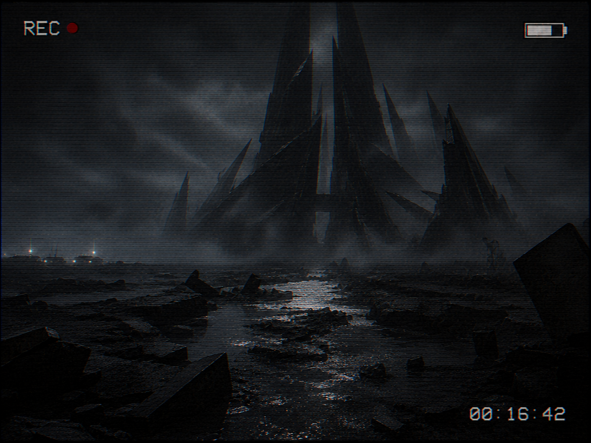

WELCOME TO NEWS 6 ONLINE | Serving Blackmoor Cove, Maine since 1974
FOUND FOOTAGE
NEWS 6: Found Footage
Unverified material submitted to NEWS 6 anonymously. Authenticity unconfirmed. Archived as received.
★ LATEST SUBMISSION

STILL FRAME RECOVERED — FULL FOOTAGE PENDING RELEASE
FROM THE INSIDE
Recovered footage appears to show someone crossing the MDG perimeter and entering the structure at the coastal incident site. Never verified or aired by NEWS 6.
Submitted [date pending]
▶ VIEW SUBMISSION »
PREVIOUSLY SUBMITTED
PREVIOUSLY SUBMITTED
WHAT THE WOODS TOOK
Anonymous footage from near Old Mill Road.
Submitted July 2, 2003
▶ WATCH FOOTAGE
© 2003 NEWS 6 Broadcasting Co. This website is a work of fiction created as part of an independent analog horror series. All names, events and news items depicted are fictional.